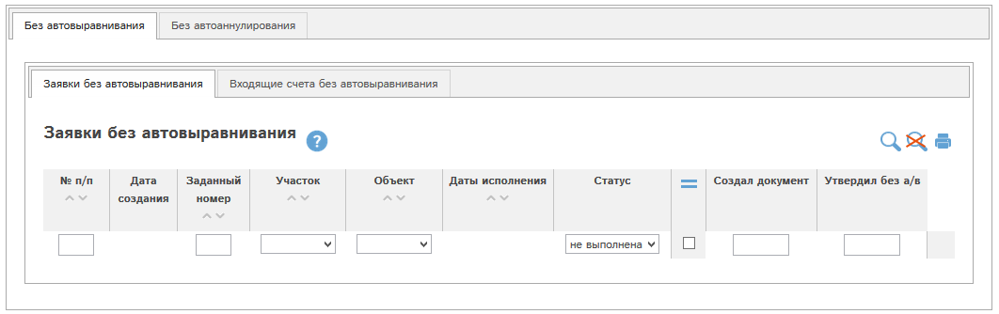

При наличии у Вас соответствующих прав Вам доступен отчет «Без автовыравнивания», «Без автоаннулирования» (кнопка в меню программы).
Отчет состоит из вложенных вкладок (в зависимости от Ваших прав):

Рис. 6.41 Отчет ««Без автовыравнивания», «Без автоаннулирования».